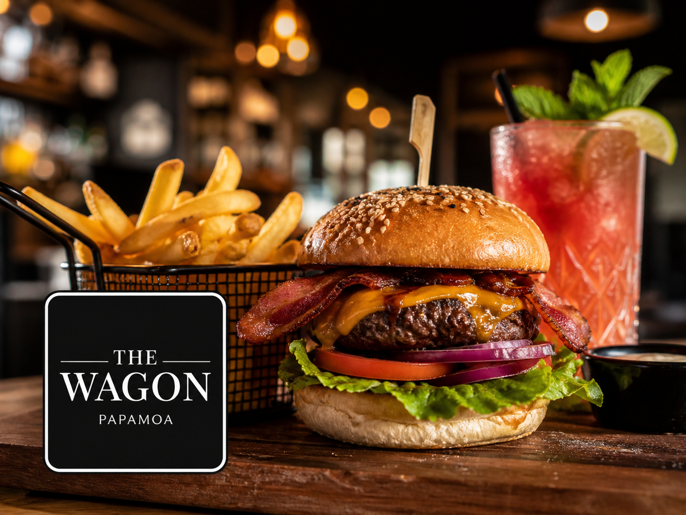

Your local guide to the best restaurants, trusted trades, accommodation and everything you need in Pāpāmoa.
Hand-picked Pāpāmoa businesses to know this week.

Gourmet burgers, craft cocktails and shared plates at Pāpāmoa Junction.
View Business →Modern, family-focused dental care - general, cosmetic and orthodontics.
View Business →Beachside over-55 lifestyle village with resort-style amenities.
View Business →Get found by locals and visitors. Join the Papamoa.info directory and grow your business in our community.
Recent local news and upcoming events from across the community.
The Summerhills Track reopened on 3 April after extensive damage from January landslips. Other tracks remain closed.
Registrations opened 20 March. The event runs 5–11 September. Beyonder is the official accommodation partner - book early.
Tauranga City Council opened public consultation on proposed Dog Management Bylaw changes - including on-lead requirements on the Pāpāmoa Shared Path.
Pāpāmoa is a coastal suburb and beach town in Tauranga, Bay of Plenty, New Zealand. It stretches 16 kilometres along the Pacific Ocean and is one of New Zealand’s fastest-growing communities, with approximately 37,800 residents. It is located 15 minutes east of Tauranga city centre and 10 minutes from Mount Maunganui. Pāpāmoa is known for its white sand beach, family-friendly environment, surf, and as the host area for the annual Zespri AIMS Games. Population & stats →
Pāpāmoa offers 16 kilometres of white sand beach, surfing, fishing, walking tracks through Pāpāmoa Hills Regional Park, and the Gordon Spratt Reserve wetland walk. Dining options range from gourmet restaurants and cafes to takeaways and Indian cuisine. Shopping includes Fashion Island, Pāpāmoa Plaza, and The Sands town centre. The area hosts the Zespri AIMS Games each September, New Zealand’s largest intermediate school sports tournament. Browse all things to do →
Pāpāmoa is approximately 15 kilometres east of Tauranga city centre, about a 15–20 minute drive via State Highway 2. Mount Maunganui is roughly 10 minutes west of central Pāpāmoa. Tauranga Airport is approximately 20 minutes away.
Yes. Pāpāmoa is one of the most popular family destinations in the Bay of Plenty. It has eight schools including primary, secondary, Catholic and Māori immersion options, extensive parks and playgrounds, a public library, multiple sports clubs, and a long flat beach that is well-patrolled in summer. Pacific Park Christian Holiday Camp is consistently rated Pāpāmoa’s top family accommodation on TripAdvisor. Schools in Pāpāmoa →
Pāpāmoa’s dining scene includes The Wagon on Toorea Street (gourmet burgers and cocktails), PAP House on Pāpāmoa Beach Road (dog-friendly restaurant and bar), The Pizza Pundits at 1/898 Pāpāmoa Beach Road (consistently top-rated on TripAdvisor), and Mumbai Masala at Fashion Island (consistently top-rated Indian restaurant). Blackberry Eatery is a popular brunch spot. Full Food & Drink directory →
Pāpāmoa has a range of accommodation including Pacific Park Christian Holiday Camp (the area’s highest-rated, alcohol-free holiday park), Tasman Holiday Parks Pāpāmoa Beach (beachfront), Beach House Motel, The Reef Beachfront Apartments, and numerous short-stay rental homes. Accommodation books out completely during the Zespri AIMS Games (September) and in peak summer. Booking early is strongly advised. Browse all accommodation →
Pāpāmoa has three main retail centres: Pāpāmoa Plaza in the west (anchor tenants include Countdown supermarket), Fashion Island on Gravatt Road (specialty stores and dining), and The Sands in Pāpāmoa East (New World supermarket, opened 2024, plus retail and dining). A fourth centre is under development at Te Tumu. Shopping centres guide →